Functional Parameters Query
This is the particular functionality this application has and, naturally, one of the tools that have the most options. If you
simply want all the numerical parameters available you can do
this.
Selecting parameters
Brenda has 12 numerical parameters available for most of the EC number. Each of them is shown in different tables like this:
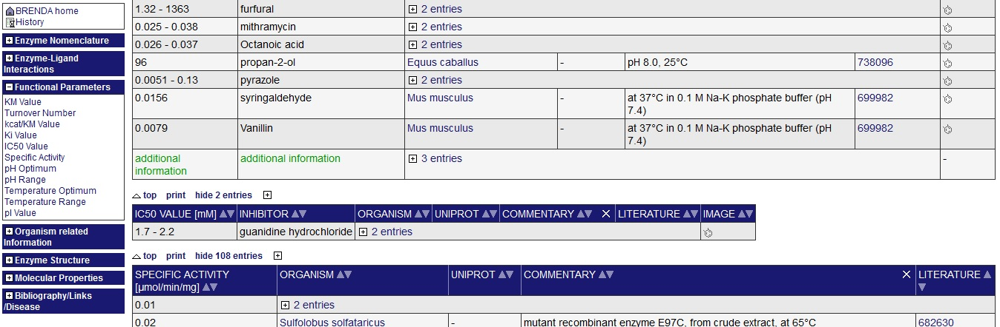
The functional parameters query generate a single table with the parameters selected separated by the organism (and the commentary)
in which the enzyme is located. To select these parameters, click the checkbox on the left of the list in the sidebar. If you want to
select them all activating the "Select all functional parameters" switch on the top of the sidebar.
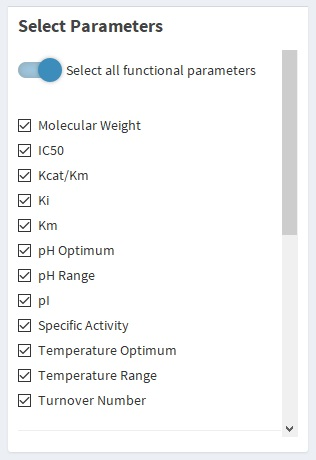
You can also select the enzymes included in the Parameter table by clicking the rows corresponding to the organism you want. But, if the
"Use all the proteins found" switch above the table is selected, the query is going to include all the enzymes, therefore, if you want to
search just the selected ones, deactivate it.
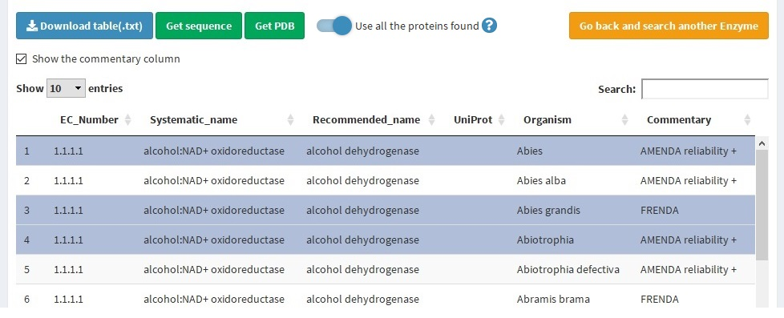
Note: Select the enzymes to the query will re-generate the Protein Table, leaving only those selected. The whole list of enzymes/organism
cannot be recovered, for that, do the
Enzyme query
again.
To do the query, click the "Search for parameters" green button at the end of the sidebar. This may take several minutes.
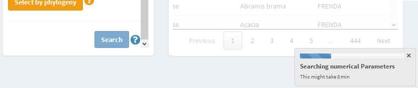
Other options of query
Selecting by phylogeny
This functionality allows you to select the enzymes by one taxonomic rank of the organism which contains it. The taxonomic ranks available
are superkingdom, phylum, class, order, family, genus, and species.
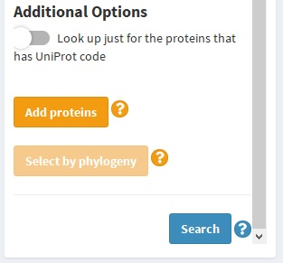
To do this filter prior to the parameter query, click the "Select by phylogeny" yellow button. After the phylogenetic is found, above the
Protein table, it's going to appear a selector with the different available taxonomic ranks. Select the one you prefer, and this category is
going to appear as a new column on the table below.
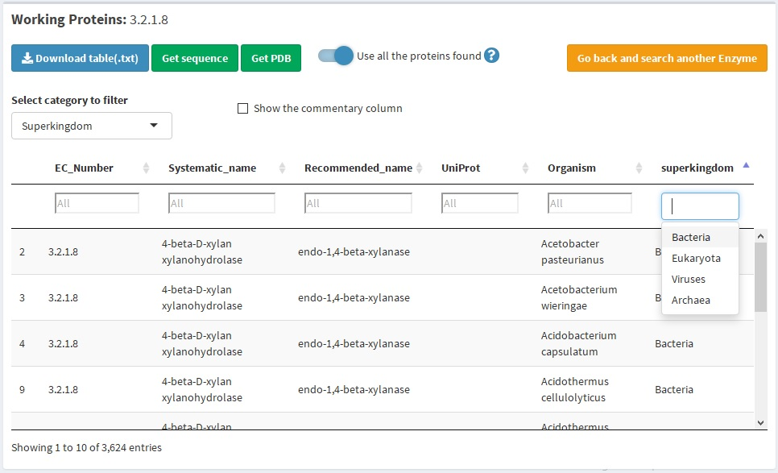
If you want to filter by one of these categories, let the protein table with the rows of the organism you want, and then press "Search"
button.
Note: If you select by phylogeny, the rows selected are going to have no meaning to the selection.
Add enzymes
You can add more EC numbers to the query doing
this.
Filter by UniProt code
If you just want to use the enzymes that have
UniProt code,
activate the switch below the list of parameters.
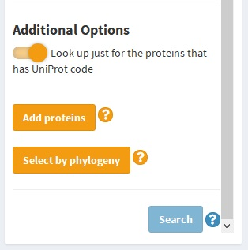
The Parameter Table
The generated table has:
6 columns indicating enzyme data, same as the shown in the
protein table
:
EC number
Systematic name
Recommended name
UniProt
(Collapsible) Commentary
(Collapsible) Literature: showing the Pubmed ID of the scientific paper
3 or 4 columns for each parameter, the amount of columns is determined by the dependency of the molecule, such
as an inhibitor or substrate:
Value: indicating the value as a single number or as a range (independent if the parameter is defined
as a range or not). The column is named with the name of the parameter, an underscore and the word "value"
Substrate/Inhibitor: indicating the name of the substrate or inhibitor. If the parameter does not
depend on a molecule, this columns is missing
(Collapsible) Commentary
(Collapsible) Literature
The parameter table looks like this:
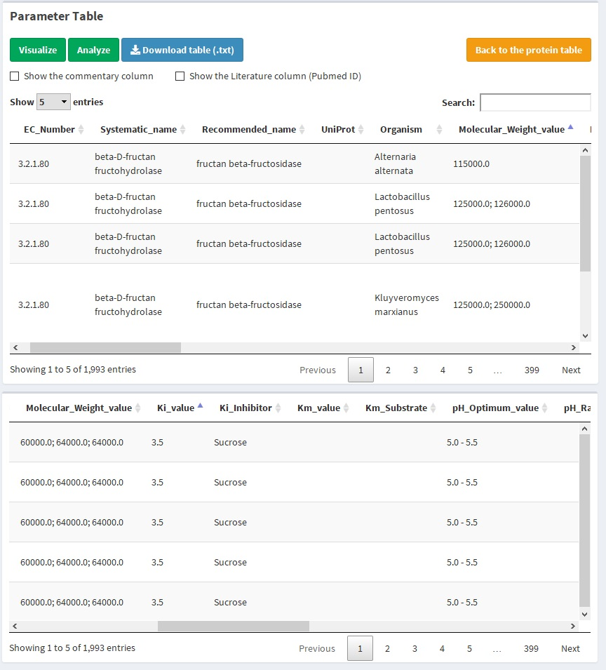
Above the table are two checkboxes indicating if the commentary and literature column is shown. If it is clicked, any of them, all the
commentary (or literature) columns are shown, that is, of the organism and each parameter found. If both are selected, it will look
like this:
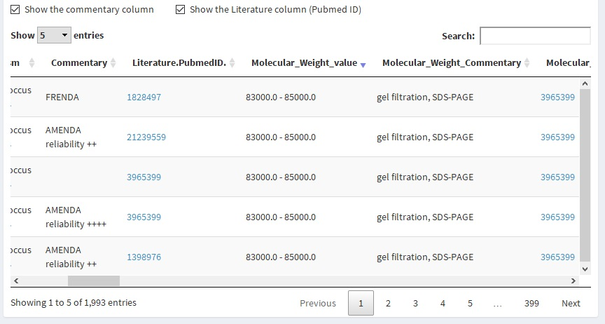
Filters
With the parameters table generated, you can also filter the numerical parameters setting the minimum and/or maximum value you
want to preserve. For this, there are slide inputs in the sidebar of the parameters table that also have a checkbox on the left. These
sliders are going to be shown if the respective parameter was selected on the previous step. In case the enzyme does not have
any parameter reported on the Brenda database (which can be due to the lack of data reported in the literature), the slider is
going to report that the parameter wasn't found. In the example below, there is no IC50 reported and the Kcat/Km was not required
for the query.
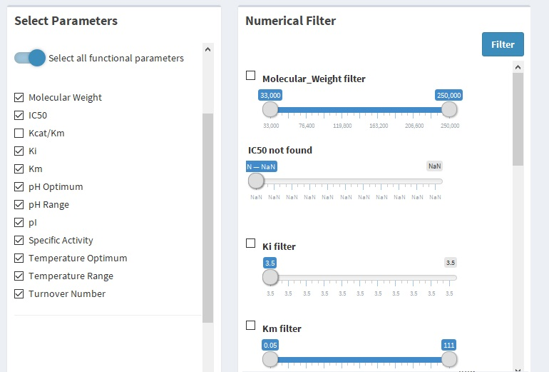
To use one parameter as a filter, move the slider letting the white circle at the left indicating the minimum value and the one
at the right indicating the maximum value your parameter is going to have. Then, click the checkbox next to the slider. Repeat this
for every parameter you want, and leave the checkbox unchecked if the parameter is indifferent to your filtering. Finally, click the
"Filter" blue button to generate the filtered table. In the example below, the molecular weight was used as a filter, it is shown
that the minimum value before and after the filtering, has changed.
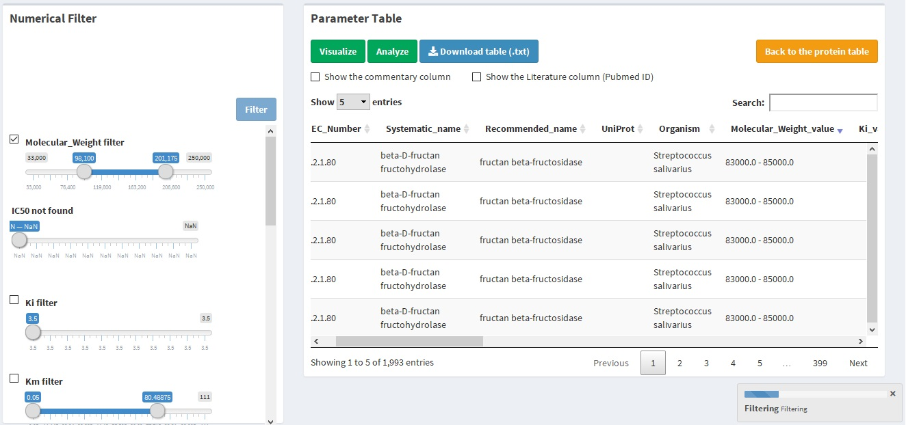
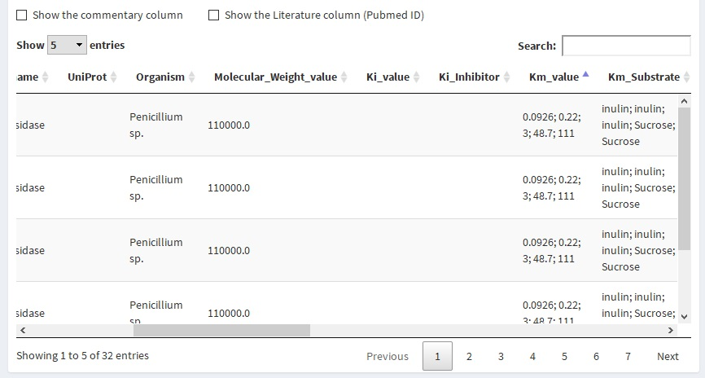
Note: There are a few Pubmed ID that says "Brenda ID: XXX" as a code. This means that searching with Brenda SOAP did not report the Pubmed ID from
the BRENDA literature code used internally on Brenda. On the
downloaded table,
the link refers to the paper on Brenda Site
If you want to undo the filtering and recover the generated table as what it was just after the query, unchecked every checkbox on the
sidebar, it doesn't matter any slider input does not have the selectors on the minimum and maximum respectively. Then, click the "
Filter" blue button.
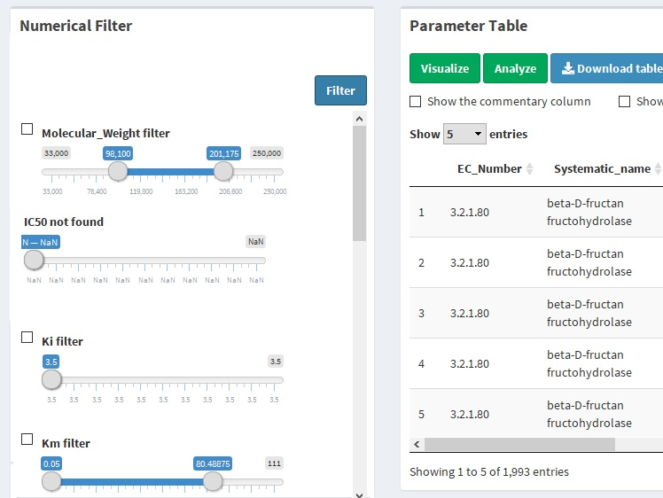
Download table
The generated and filtered table can be download locally by clicking the "Download table" blue button above the table.
.jpg)
The downloaded table is a .txt file which columns are separated by the tabulator character. It contains the commentary and literature columns
regardless of whether they are shown or not, and it has the parameter as shown, this is, filtered.
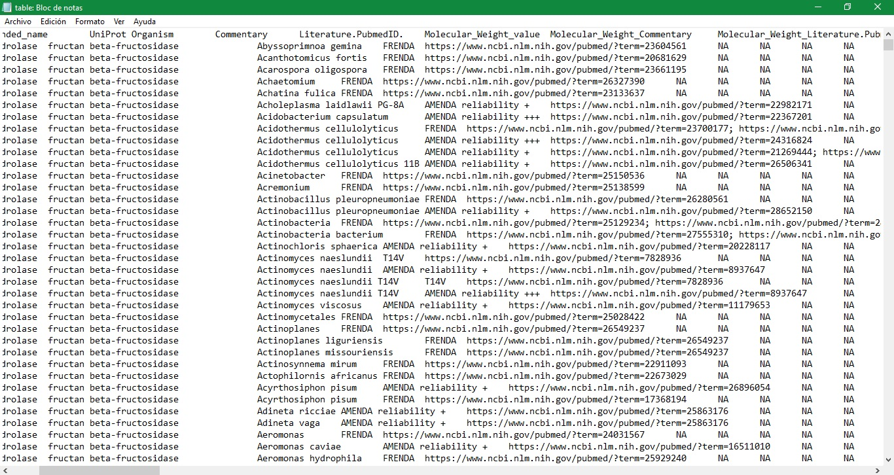
You can access this table as you want, for reference
Microsoft Office Excel
can generate a workbook from this file, remember it has a header row, it's separated by TAB character and it doesn't have the row names. With
R
you can open it with the following command:
read.table(<table_name>, sep = "\t", header = TRUE)
The protein table can be downloaded too with the same format and particularities.